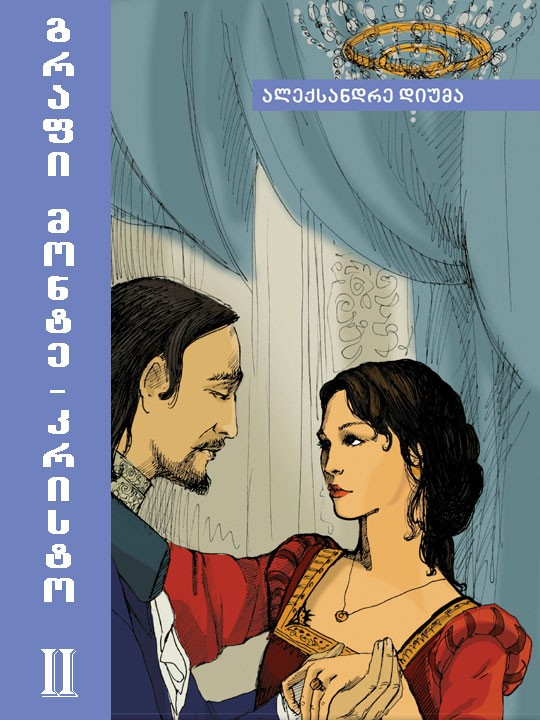
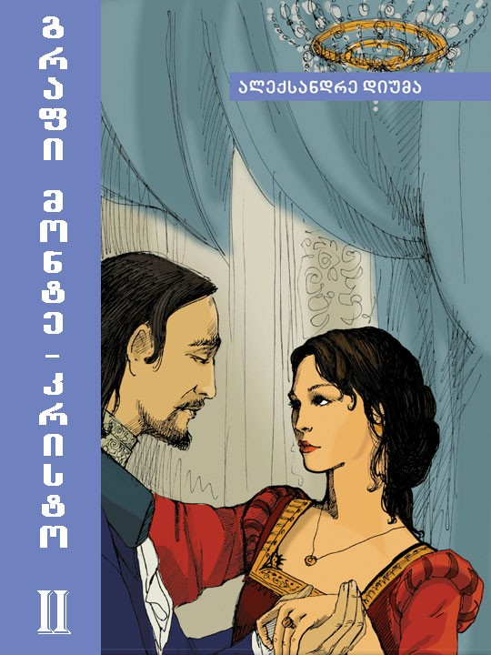

საქართველოში ერთ-ერთი პირველი დამოუკიდებელი გამომცემლობის ისტორია.გასული საუკუნის 90-იან წლების მიწურულს – ჩვენი ქვეყნისთვის ერთ-ერთ ურთულეს პერიოდში – იწყება. გამომცემლობის დამფუძნებელი, ბაკურ სულაკაური, მთარგმნელი.იყო, რომელმაც პოსტსაბჭოთა ქვეყანაში თავისი თარგმნილი წიგნის გამოცემა განიზრახა და სწორედ ამით შეიძინა პირველი საგამომცემლო გამოცდილება. მიუხედავად იმისა, რომ მან მოგვიანებით საგანმანათლებლო სფეროში გადაინაცვლა, 1999 წელს დაფუძნებული.გამომცემლობა კვლავ მის სახელს ატარებს და რჩება ლიდერად ქართულ საგამომცემლო ბაზარზე. თავისი არსებობის განმავლობაში „სულაკაურის გამომცემლობამ“ ბევრი საინტერესო და მნიშვნელოვანი საგამომცემლო პროექტი განახორციელა, ბევრი ტექნოლოგიური ინოვაცია დანერგა, ბევრი ქართველი და უცხოელი.ავტორი გააცნო მკითხველს, მაგრამ მთავარი, რითაც გამომცემლობის მაღალპროფესიონალური.გუნდი ამაყობს – მის მიერ გამოცემული წიგნების მაღალი ხარისხია. ჩვენ ვართ ლიდერები ქართულ საგამომცემლო.საქმეში და ჩვენ მიერ გამოცემულ თანამედროვე ქართველ ავტორებს.კითხულობენ არამარტო საქართველოში, არამედ მსოფლიოს სხვადასხვა ქვეყანაში.ოცზე მეტ სხვადასხვა ენაზე. ჩვენი ავტორები იმარჯვებენ როგორც ქართულ, ისე საერთაშორისო ლიტერატურულ კონკურსებში; არაერთი მათგანი.ყოველწლიური ლიტერატურული პრემია „საბას” მრავალგზის ლაურეატია. „სულაკაურის გამომცემლობა“ “საქართველოს წიგნის გამომცემელთა და გამავრცელებელთა ასოციაციის” ერთ-ერთი.

 
